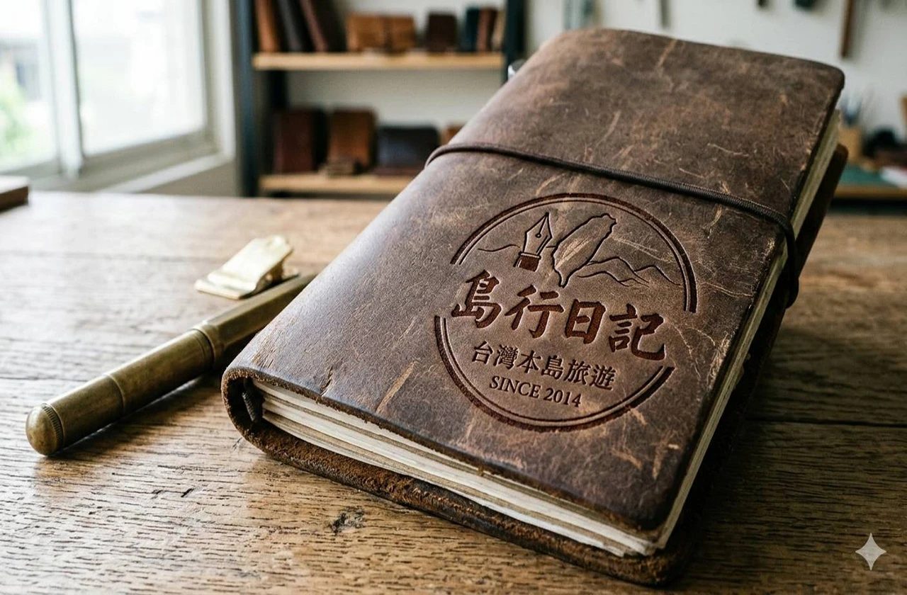
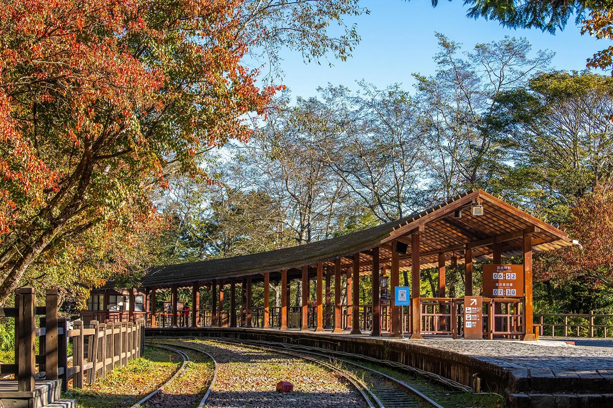
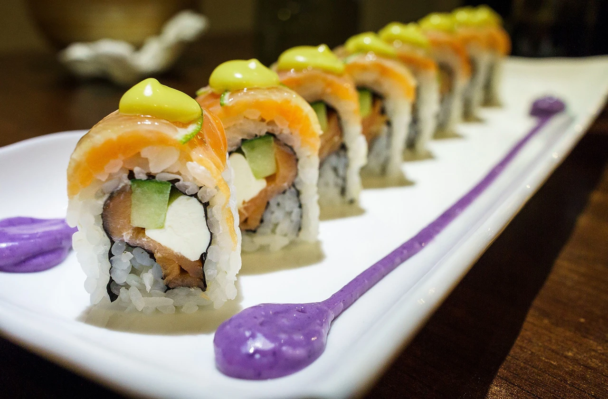

restore_page品牌簡介
我們把這片土地當成最親密的手帳，日復一日地書寫、行走、感受。
在別人眼中，台灣是「小島」；在我們心中，台灣是擁有高山、海洋、平原、峽谷、老街、夜市、稻田、茶園、溫泉、鐵道、古道……一座濃縮了所有地景可能性的「大島」。
島型日記 專注經營台灣本島的旅行體驗，不追求最遠、最貴、最炫，而是追求最真、最深、最像「回家一樣熟悉卻又不斷驚喜」的旅行方式。
我們相信：最好的旅行不是抵達，而是重新發現自己腳下的土地。最好的導覽不是講古，而是讓你自己聽見風、聞到土、嚐到鹹、感受到溫度。

stars得獎與榮耀
2018 台灣旅遊金質獎「最佳深度文化旅遊品牌」
2021 亞洲旅遊大賞（ATTA）「最具台灣特色旅遊體驗」銀獎
2022 台灣好行創新獎「最受在地人推薦的旅行品牌」
2024 台灣永續旅遊獎「環境教育與社區共創」金獎
2025 《天下雜誌》服務業大調查「台灣最值得信賴小型旅行品牌」第1名
這些獎項對我們來說，不是終點，而是提醒：
我們還能走得更慢、更深、更貼近這片島的脈搏。
島型日記
不是帶你去旅行，
而是陪你重新愛上這座島的形狀。
想一起把台灣寫進日記嗎？
我們在下一頁等你。

picture_in_picture國旅優惠方案
2026年台灣政府有何輔助的旅遊方案2026年，台灣交通部觀光署推出「平日國旅優惠方案」（又稱國旅補助），總預算約20-23億元，核心目標為鼓勵平日（週日至週四、非國定假日）出遊、連續住宿，避免旺季擁擠，暑假7-8月不適用。方案分階段實施，最快自4月起首波上路（視立法院預算審議，可能順延至9月淡季），採抽籤或限量方式，非人人有份。

pageview一般優惠方案
2026年民間有哪些最優惠的台灣旅遊方案2026年台灣民間最優惠的旅遊方案，主要來自各大旅行社（如雄獅、可樂、東南、燦星）、訂房平台（AsiaYo、Booking、Agoda）、線上旅展及飯店自推促銷，強調早鳥、連假、主題行程或住宿券，常疊加政府平日國旅補助（最高3,200元），讓彰化出發的你更省！目前熱門方案聚焦春季連假、清明/勞動節、櫻花/燈會季，暑假早鳥也已開賣。
早鳥最省！彰化出發建議中部/花東路線，疊加政府補助+民間早鳥，一趟省3,000-10,000元超有感。詳細資格避詐騙，務必查官方，趕快規劃春季小旅行吧